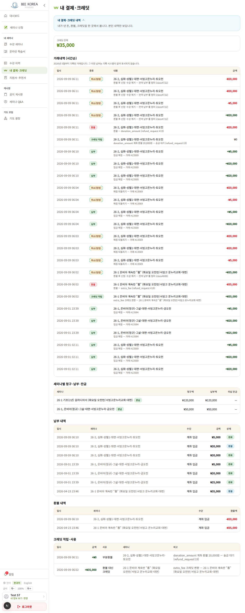
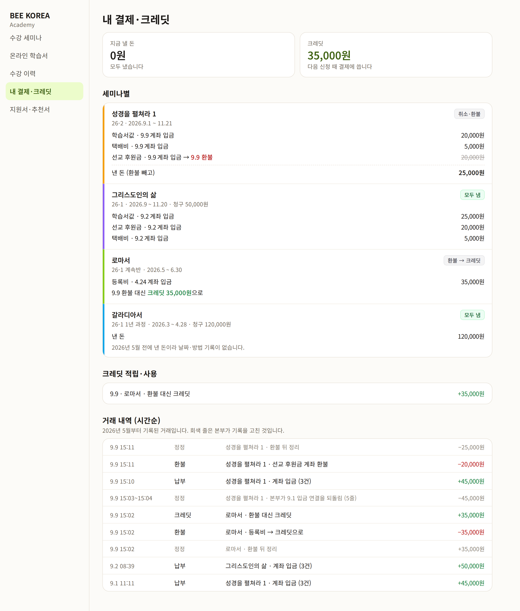
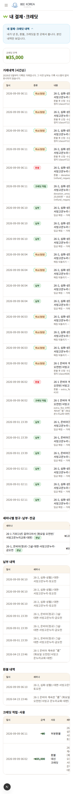
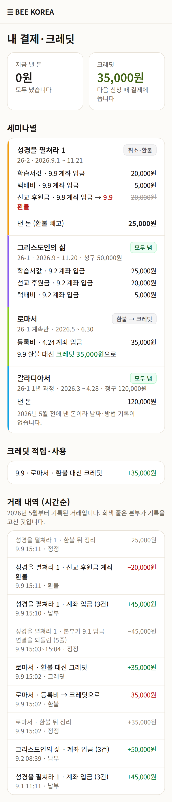

LMS 내 결제·크레딧 — 디자인 시안 1차
2026-10-12 · 학생이 「내가 얼마를 냈고, 낼 돈이 남았나」를 보는 화면 · 돈 기록은 실제 학생 한 분의 것(이름·연락처 없음) · 아직 적용 전
무엇이 바뀌나
- 맨 위 두 칸 — 「지금 낼 돈」 · 「크레딧」. 지금은 크레딧만 있고, 낼 돈이 남았는지는 아래 표를 읽어야 압니다
- 세미나별 카드 하나에 청구·낸 돈(무엇에 얼마 — 학습서값·택배비·후원금)·환불을 함께. 지금은 「세미나별」·「납부 내역」·「환불 내역」 세 표에 흩어져 있고 같은 반 이름이 표마다 되풀이됩니다. 보이는 내용은 줄지 않습니다(5/31 「4가지 전부 노출」 그대로)
- 제목 = 과목 이름(수강 이력과 같은 규칙)
- 거래 내역 — 같은 때 들어온 입금은 한 줄로(「계좌 입금 (3건)」) · 본부가 기록을 고친 줄은 회색 · 「거래 #13569」「refund_request #19」「donation_amount」 같은 내부 번호·영어 코드를 빼고 사람 말로. 지금은 25줄 중 12줄이 「취소(정정)」입니다
- 크레딧 줄에서 0원짜리 표시 줄(부분환불 표시용)은 뺍니다
- ✅ 이미 고침(배포): 시각이 9시간 이르게 보이던 것(세계 표준시 그대로) — 밤 결제는 날짜까지 틀렸습니다
PC


휴대폰


정해 주실 것
- 세 표(세미나별·납부·환불)를 세미나별 카드로 합칠까요? 내용은 그대로, 반으로 묶기만 합니다(추천).
- 거래 내역의 정정 줄 — 시안처럼 회색으로 남기고 묶을까요(추천: 돈 기록은 숨기지 않는다), 아니면 학생에게는 아예 빼고 본부 화면에서만 볼까요?
- 🔴 돈 기록이 서로 다른 반이 하나 있습니다. 이 학생의 「성경을 펼쳐라 1」은 납부 기록으로는 25,000원을 낸 채(학습서값·택배비, 후원금만 환불)인데, 거래 내역(원장)은 환불 뒤 정리로 0원입니다. 책을 받았으니 25,000원은 본부가 받은 돈이 맞다면 원장 정리가 너무 많이 지운 것이고, 이 한 사람 문제가 아니라 환불 뒤 정리 흐름의 문제일 수 있습니다. 화면과 따로 먼저 확인할까요?(돈 데이터는 손대지 않고 읽기만)
참고: 이 반의 입금은 9.1 에 들어왔지만 본부가 9.9 에 연결을 다시 해서 납부 날짜가 9.9 로 보입니다. 시안은 기록 그대로입니다.